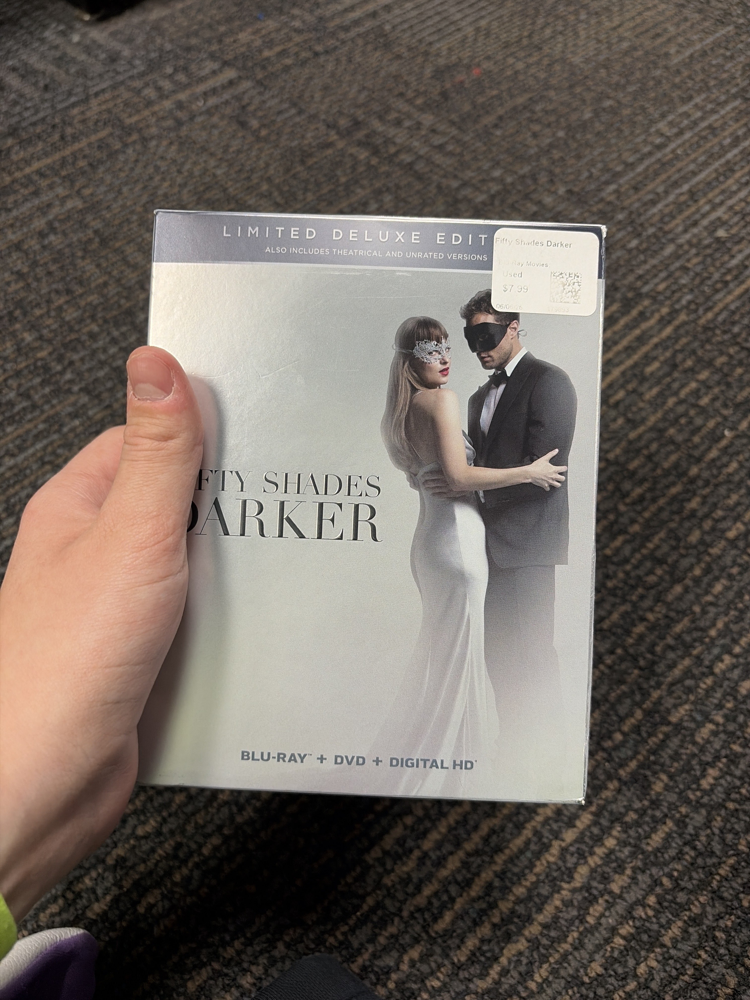
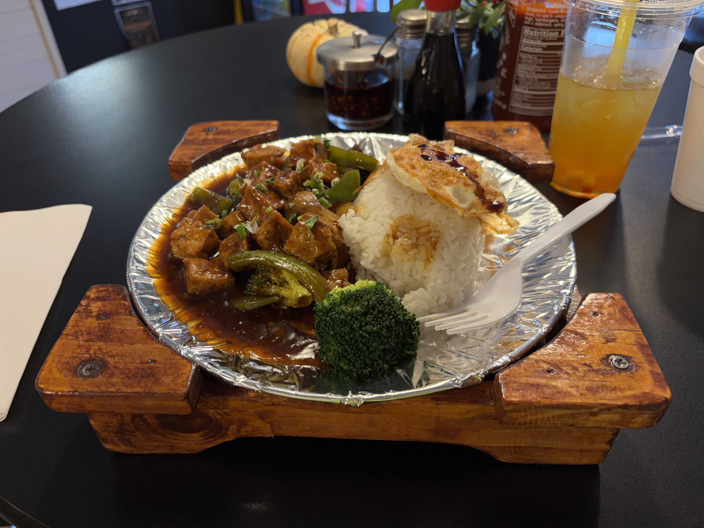
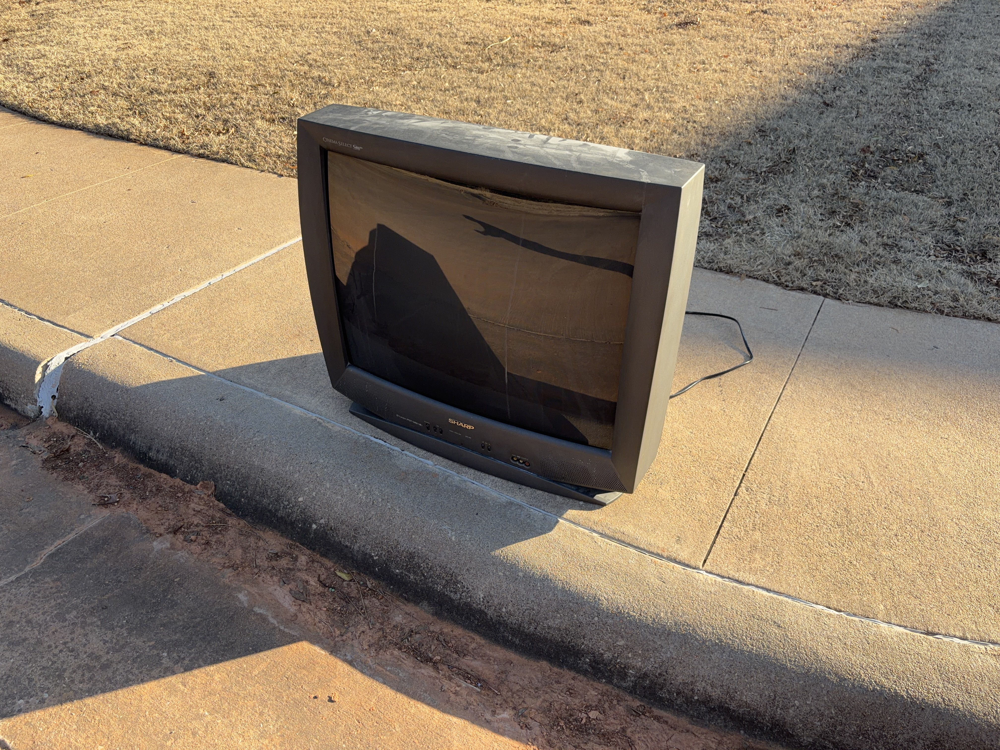
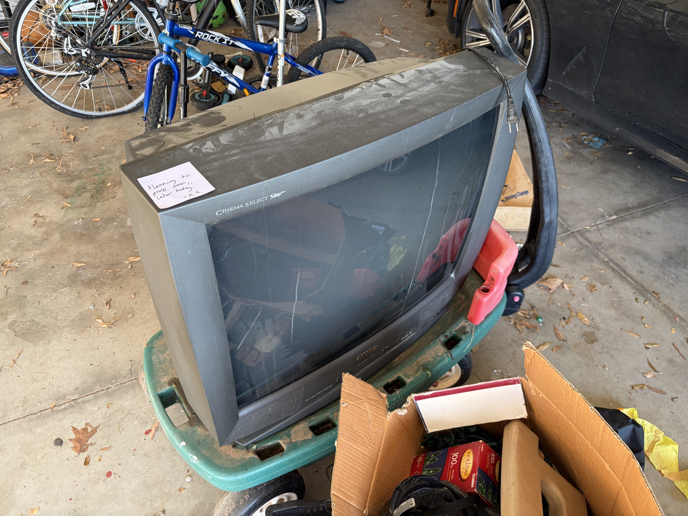

My time in Stillwater, OK over the holidays was, like, pretty cool. I hung out with my family which was nice. I got new lenses for my old glasses ordered which is gonna be hype. I brought down Bertuch and you can see alllll those photos in gallery005. Anyways, important things happened.
First off, at GameXchange, I found Fifty Shades Darker Limited Deluxe Edition!!! With wine charms!!!! And napkins!!!! Fifty Shades Darker is one of my favorite bad movies of all time, and, holy shit, it's perfect.

Fifty Shades Darker Limited Deluxe Edition!!! 😱😱😱
Second off, this Mapo Tofu I had at Stillwater's Cafe 88, which they plated incredibly beautifully super randomly (they usually put stuff in takeout containers).

Mapo Tofu 🫘
Third off, the neighbors across from my mom's house randomly put a 32" CRT that apparently works on their curb. And it was gonna get taken by the trash people the next morning. So I asked, and it was free, and I took it. And now it's my car in Minnesota — it's wayyyyyy too fucking heavy to bring in myself, so I'm gonna need some help eventually to get it inside. But you know, I've been waiting to find a good CRT to own for a while, and I would've preferred a smaller one, but this one is apparently very good and also has S-Video and Component input, so, like. It's fucking beautiful. And now it's mine. Beau (or neighbor) came to the door a few hours after I grabbed it and gave me some component cables for the TV as well as the remote, so. Like, holy shit. Perfect Christmas present. I thanked her immensely, I'm so happy to have this. My mom got very peeved and angry that this is a thing that I did but it's worth it. Drakengard gonna go crazy on this thing.


Da CRT 📺
Oh and like the holidays were very nice with my whole family. Of course. I played Mario Kart World with my nephew and Trivial Pursuit with the fam. And ate a shitton of pumpkin pie. And like Bertuch loved everyone and everyone loved Bertuch. Anyways. It's The Iliad because The Odyssey came next.